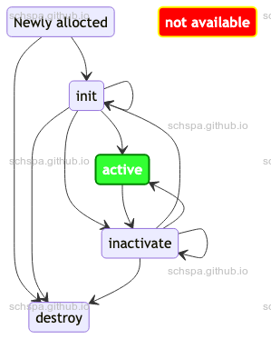

Linux Debug object
Table of Contents
功能介绍
Debug Object 是内核中为了监控对象生命周期而引入的检测机制，通过该机制，系统会
在对象发生不正常状态切换时报出来错误。
状态列表
- none
- 未初始化
- initialized
- 已初始化
- inactive
- 初始化，但未激活
- active
- 初始化，已激活
- destroyed
- 已销毁
- not available
- 未找到对象
状态流转图
下图是debug object的状态流转图，下述流程之外的状态是不备被允许的

API
头文件如下：
#include <linux/debugobjects.h>
debugobjects的 API 比较简单，在此不做解释。
实例
debugobjects对于static object处理的BUG
syzbot link: WARNING in __mod_timer
Log 如下：
------------[ cut here ]------------ODEBUG: assert_init not available (active state 0) object: ffffffff8d4fcbc0 object type: timer_list hint: key_gc_timer_func+0x0/0x80 security/keys/gc.c:117WARNING: CPU: 1 PID: 10646 at lib/debugobjects.c:512 debug_print_object lib/debugobjects.c:509 [inline]WARNING: CPU: 1 PID: 10646 at lib/debugobjects.c:512 debug_object_assert_init+0x1f2/0x240 lib/debugobjects.c:899Modules linked in:CPU: 1 PID: 10646 Comm: syz-executor.3 Not tainted 6.2.0-syzkaller-06695-gd8ca6dbb8de7 #0Hardware name: Google Google Compute Engine/Google Compute Engine, BIOS Google 01/21/2023RIP: 0010:debug_print_object lib/debugobjects.c:509 [inline]RIP: 0010:debug_object_assert_init+0x1f2/0x240 lib/debugobjects.c:899Code: a0 fd 4c 8b 4d 00 48 c7 c7 20 68 38 8b 48 c7 c6 00 65 38 8b 48 c7 c2 e0 69 38 8b 31 c9 4d 89 e8 53 e8 42 6f 10 fd 48 83 c4 08 <0f> 0b ff 05 42 e1 10 0a 48 83 c5 38 48 89 e8 48 c1 e8 03 42 80 3cRSP: 0018:ffffc9000b1276f8 EFLAGS: 00010282RAX: caefb79dfa053800 RBX: ffffffff83f63700 RCX: 0000000000040000RDX: ffffc90014421000 RSI: 0000000000018ba9 RDI: 0000000000018baaRBP: ffffffff8aec5400 R08: ffffffff81536d42 R09: fffff52001624e55R10: 0000000000000000 R11: dffffc0000000001 R12: dffffc0000000000R13: ffffffff8d4fcbc0 R14: 0000000000000004 R15: ffffffff91d3e4e8FS: 00007f122cc29700(0000) GS:ffff8880b9900000(0000) knlGS:0000000000000000CS: 0010 DS: 0000 ES: 0000 CR0: 0000000080050033CR2: 000055555632f708 CR3: 00000000690df000 CR4: 00000000003526e0DR0: 0000000000000000 DR1: 0000000000000000 DR2: 0000000000000000DR3: 0000000000000000 DR6: 00000000fffe0ff0 DR7: 0000000000000400Call Trace:<TASK>debug_timer_assert_init kernel/time/timer.c:792 [inline]debug_assert_init kernel/time/timer.c:837 [inline]__mod_timer+0x10d/0xf40 kernel/time/timer.c:1020key_reject_and_link+0x3f5/0x6e0 security/keys/key.c:610key_negate_and_link include/linux/key-type.h:187 [inline]complete_request_key security/keys/request_key.c:64 [inline]call_sbin_request_key+0xa7b/0xcd0 security/keys/request_key.c:213construct_key security/keys/request_key.c:244 [inline]construct_key_and_link security/keys/request_key.c:503 [inline]request_key_and_link+0x11e3/0x18e0 security/keys/request_key.c:637__do_sys_request_key security/keys/keyctl.c:222 [inline]__se_sys_request_key+0x271/0x3b0 security/keys/keyctl.c:167do_syscall_x64 arch/x86/entry/common.c:50 [inline]do_syscall_64+0x41/0xc0 arch/x86/entry/common.c:80entry_SYSCALL_64_after_hwframe+0x63/0xcd
ODEBUG: assert_init not available (active state 0) object: ffffffff8d4fcbc0 object type: timer_list hint:
由上面面log可知，Linux的密钥管理模块在调用 mod_timer 时发现，这个timer对象未初始化，所以触发了assert的检查。
原因分析
调用路径：
key_schedule_gc(key->expiry + key_gc_delay);
mod_timer(&key_gc_timer, expires);
这里的 key_gc_timer 是个全局静态定义的timer对象, 对于静态定义的timer对象, 是不
需要显式调用 timer_setup 等初始化函数来进行初始化的。
/** Reaper for links from keyrings to dead keys.*/static void key_gc_timer_func(struct timer_list *);static DEFINE_TIMER(key_gc_timer, key_gc_timer_func);
对于 debug_object_assert_init 函数，
/*** debug_object_assert_init - debug checks when object should be init-ed* @addr: address of the object* @descr: pointer to an object specific debug description structure*/void debug_object_assert_init(void *addr, const struct debug_obj_descr *descr){struct debug_bucket *db;struct debug_obj *obj;unsigned long flags;if (!debug_objects_enabled)return;db = get_bucket((unsigned long) addr);raw_spin_lock_irqsave(&db->lock, flags);obj = lookup_object(addr, db);if (!obj) {struct debug_obj o = { .object = addr,.state = ODEBUG_STATE_NOTAVAILABLE,.descr = descr };raw_spin_unlock_irqrestore(&db->lock, flags);/** Maybe the object is static, and we let the type specific* code confirm. Track this static object if true, else invoke* fixup.*/if (descr->is_static_object && descr->is_static_object(addr)) {/* Track this static object */debug_object_init(addr, descr);} else {debug_print_object(&o, "assert_init");debug_object_fixup(descr->fixup_assert_init, addr,ODEBUG_STATE_NOTAVAILABLE);}return;}raw_spin_unlock_irqrestore(&db->lock, flags);}EXPORT_SYMBOL_GPL(debug_object_assert_init);
上面对于static的处理是有判断的，对于静态数据，允许在assert_init时，直接将对应的debugobject进行初始化。
但是在我们的例子中，代码神奇的跑到了else分支，并没有将这个timer当作静态对象来处理。
为什么没有当作静态对象处理？
先看看判断静态对象的代码：
#define __TIMER_INITIALIZER(_function, _flags) { \.entry = { .next = TIMER_ENTRY_STATIC }, \.function = (_function), \.flags = (_flags), \__TIMER_LOCKDEP_MAP_INITIALIZER( \__FILE__ ":" __stringify(__LINE__)) \}#define DEFINE_TIMER(_name, _function) \struct timer_list _name = \__TIMER_INITIALIZER(_function, 0)static bool timer_is_static_object(void *addr){struct timer_list *timer = addr;return (timer->entry.pprev == NULL &&timer->entry.next == TIMER_ENTRY_STATIC);}
从上面的代码可以看到，系统是通过 timer->entry 的值来知道此对象是一个静态对象的。
这样就很容易联想到，如果timer被加入系统的timer list中，那么这个timer对象的
timer->entry 的值就和初始值不一样了，所以如果timer被使用之后，这个判断就不成立
了。
What？ 是不是发现了个大BUG，为什么syzbot才报了这么一次？
经过分析，这个问题其实并不严重，实际上，对于静态对象，只有在调用 debug_object_activate 和 debug_object_assert_init 时才有特殊处理。其他地方没有相关的处理。
对于 debug_object_activate, 只要不是首次调用，系统都可以找到已经申请到的
debugobject对象，从而可以正确的来处理这个对象的状态。
对于 debug_object_assert_init， 也是相同的，只有在首次调时，依赖于对象的状态。所
以来言，只有在对象第一次使用时会有概率出现问题，而静态对象，一般不存在第一次使用
就出现并发的场景，这个出现问题的情景就比较少见。
race在哪里？
我的patch comments已经对现象的现场做了分析。
Link: https://lore.kernel.org/all/20230303161906.831686-1-schspa@gmail.com/
T0 T1=========================================================================mod_timer();debug_object_assert_initdb = get_bucket((unsigned long) addr);raw_spin_lock_irqsave(&db->lock, flags);obj = lookup_object(addr, db);if (!obj) {raw_spin_unlock_irqrestore(&db->lock, flags);<< Context switch >>mod_timer();debug_object_assert_init...enqueue_timer();/** The initial state changed a static timer object, and* is_static_object will return false*/if (descr->is_static_object &&descr->is_static_object(addr)) {debug_object_init();} else {<< Hit here for a static object >>debug_print_object(&o, "assert_init");debug_object_fixup(descr->fixup_assert_init, addr,ODEBUG_STATE_NOTAVAILABLE);}}
上面的场景描述了问题发现的场景，从地址来获取debugobject对象这个地方，实际上都有
&db->lock 来保护，而 is_static_object 的状态判断实际上依赖于对象的初始状态，
所以，事实上 is_static_object 也应该在系统第一次初始化的时候来判断， 而
&db->lock 刚好可以用来保证第一次申请对象的时候再调用 is_static_object 的接口。
修复
V1
- 解决思路
- 添加额外的状态，并保证在
&db->lock锁范围内，在对象首次初始化的时候调用
is_static_object接口，并将结果保存在debugobject对象中去。 - 在判断静态对象的时候，如果已经找到对象，就直接返回之间保存的静态对象状态位，
而不需要调用is_static_object。
- 添加额外的状态，并保证在
- 存在的问题
- debug_objects_selftest 中将一个全局变量从不是static的类型，变为了static类型，
这样，由于debugobject对象已经找到，此时将不会调用is_static_object接口，
从而，事实上，未能将期转变为static对象，因此需要稍微修改一下目前的测试case。
- debug_objects_selftest 中将一个全局变量从不是static的类型，变为了static类型，
Link: https://lore.kernel.org/all/20230303161906.831686-1-schspa@gmail.com/
maintainer version
- 解决思路
- 由于出现问题是由于查找对象和初始化对象是在两次单独的临界区，因此造成了状态
不一致，所以将这两个过程合并在一个临界去中完成，从而完成BUG修复。
- 由于出现问题是由于查找对象和初始化对象是在两次单独的临界区，因此造成了状态